In China Employee Termination in 2026: A Scenario-Led Legal Context Guide for Foreign Employers Managing Cross-Border Risk
Key takeaways
- Foreign employers get better outcomes in China termination cases when legal-route clarity comes before execution speed.
- Scenario analysis helps non-local teams understand how similar business pressure can produce very different risk outcomes depending on route, evidence, and alignment discipline.
- The largest avoidable failures usually come from route ambiguity, fragmented records, and contradictions between communication and payroll outputs.
- Operational SOPs matter, but they should implement legal conclusions rather than substitute for them.
- A cross-scenario control model can reduce dispute exposure while preserving practical execution speed in cleaner cases.
Legal and regulatory primer for non-local readers
Many multinational teams ask one central question: “What is the compliant way to terminate in China without creating payroll or legal surprises?” The answer starts with legal architecture, not with process checklists. China termination outcomes are strongly shaped by whether the employer can support the chosen route with coherent evidence and consistent cross-function outputs.
The legal baseline comes from the Labor Contract Law, which sets route and consequence logic. The State Council implementation regulation adds practical interpretation needed for application. Supreme People’s Court labor dispute interpretation provides an adjudication-facing perspective that highlights evidence quality and consistency risk. The Social Insurance Law supports statutory obligations linked to termination-month closure activities. China Briefing is useful as a practical translation layer for foreign employers, especially when bridging legal principles into operating decisions.
For international readers unfamiliar with local context, the key mindset shift is this: in China, termination is a legal-governance event with operational consequences. Teams that treat it as a pure operational workflow often discover risk too late.
Why scenario-led analysis works for foreign employers
Scenario writing is valuable because it mirrors how cross-border decisions are actually made: under pressure, with incomplete information, and with multiple functions moving in parallel. Rather than discussing rules in abstraction, scenarios show where decisions drift and how controls should respond.
This format also reduces overconfidence. Foreign teams often have strong regional process discipline, but scenario analysis reveals where local legal assumptions can diverge from global intuition. By examining route choices, evidence states, communication patterns, and payroll mappings inside concrete situations, teams can calibrate policy without false precision.
The scenarios below are not legal advice for specific cases. They are practical control models grounded in the legal hierarchy and common multinational operating patterns.
Scenario 1: performance-pressure case under quarterly delivery stress
A business unit leader in China asks HR to terminate a mid-level employee quickly, citing repeated output issues and team disruption. Regional management supports urgency due to quarter-end delivery commitments. HR has mixed documentation: some manager notes are detailed, but formal records are incomplete and performance framing changed over time.
Legal-context reading
The business rationale may be understandable, but route support is not automatically complete. In China, managerial conviction does not replace evidentiary coherence. If the case route is asserted without stable records, dispute exposure can increase significantly.
Typical failure pattern
Teams move ahead with communication drafting and payroll planning while route and evidence questions remain unresolved. Later, conflicting artifacts emerge: internal rationale, employee-facing language, and payout labels do not fully align.
Control response
A legal-first team pauses outward execution, completes route confirmation with HR/legal, builds an evidence map, and revalidates whether the selected pathway remains defensible. Payroll remains provisional until alignment passes. This may add short-term friction but usually lowers downstream volatility.
Practical lesson for foreign employers
In performance-pressure scenarios, speed should be conditional on route confidence—not the other way around.
Scenario 2: restructuring-pressure case with regional deadline compression
A regional restructuring program includes China workforce reduction targets. Headquarters requests rapid implementation and consistent reporting across markets. Local China teams report uneven case readiness and uncertainty in several high-sensitivity files.
Legal-context reading
Restructuring pressure increases governance complexity because case volume can hide quality variance. China legal-route handling still requires case-level support, even when the commercial strategy is centrally defined.
Typical failure pattern
One-speed rollout is applied for convenience. Low-risk and high-risk cases move through the same process intensity. Ambiguous cases are pushed forward without resolving local questions or consistency checks.
Control response
Segment cases by route confidence and evidence status. Proceed with clean files; escalate or hold ambiguous files pending confirmation. Require a shared alignment gate across legal, HR communication, and payroll outputs before release.
Practical lesson for foreign employers
A risk-segmented rollout is often faster overall than a forced uniform rollout that generates avoidable rework and disputes.
Scenario 3: contract-cycle ambiguity with “administrative closure” assumptions
A fixed-term contract reaches end of cycle. Local managers assume process closure is straightforward and request rapid handling to avoid administrative backlog. HR notes potential ambiguity in route treatment and communication wording.
Legal-context reading
Contract-cycle cases are often treated as low-risk administration, but legal and compensation implications can still depend on case facts and route framing. Over-automation can produce hidden misclassification risk.
Typical failure pattern
Teams skip route validation because the case appears routine. Communication and payroll are processed as admin tasks. Later review identifies inconsistencies in rationale and statutory handling assumptions.
Control response
Apply the same legal-first checks used in non-routine cases: confirm route, verify facts, align communications with payroll treatment, and document any local uncertainty. Do not treat “routine” as a reason to bypass controls.
Practical lesson for foreign employers
Routine-looking cases can still become complex if route assumptions are untested.
Cross-scenario control principles
Across these scenarios, five recurring controls distinguish stable outcomes from high-risk outcomes:
- Route certainty before execution
- If route identity is unclear, the case is not execution-ready.
- Evidence as decision input, not filing output
- Records should support decisions before release, not after challenge.
- Three-way alignment as release condition
- Legal rationale, employee communication, and payroll mapping should tell one coherent story.
- Uncertainty visibility
- Local ambiguity should be logged and escalated, not hidden.
- Archive accountability
- Case closure requires retrievable records and explicit ownership.
These principles are intentionally simple so cross-border teams can adopt them without overengineering.
Secondary operations layer (kept subordinate to legal context)
Legal SOP
- Confirm route classification and confidence boundaries.
- Define required evidence threshold for progression.
- Approve escalation/hold decisions when ambiguity remains.
HR SOP
- Build chronology and maintain artifact version control.
- Coordinate cross-function alignment checks.
- Own case closure checklist and archive index.
Manager SOP
- Provide factual records and avoid premature legal labeling.
- Follow approved communication boundaries.
- Escalate urgency-vs-control conflicts early.
Payroll SOP
- Keep mapping provisional until route and alignment checks pass.
- Ensure labels and treatment mirror approved rationale.
- Hold release when inconsistencies appear.
Vendor/EOR SOP
- Execute tasks with traceable handoffs.
- Maintain record transfer integrity and ownership logs.
- Escalate boundary uncertainty before completion.
Exception handling for scenario drift
Exception A: route changes mid-case
- Freeze downstream outputs.
- Re-run alignment and evidence checks.
- Reissue approved artifact set under new route framing.
Exception B: key record unavailable before release
- Hold release and classify impact severity.
- Decide whether to recover evidence, revise route, or escalate for alternative closure path.
Exception C: local uncertainty discovered late
- Document uncertainty and seek local confirmation.
- If timing pressure persists, require formal risk acknowledgment.
Exception D: payroll and communication mismatch
- Block final dispatch.
- Reconcile artifacts and obtain multi-function sign-off.
Exception E: vendor ownership conflict
- Pause handoff.
- Publish explicit responsibility map and resume only after acknowledgment.
This exception model helps teams recover control without creating additional inconsistency.
System implementation notes for scenario-informed governance
You do not need a major system rebuild to operationalize these controls. Lightweight configuration can provide strong gains:
- Add a mandatory route field with approval state.
- Add evidence-status tags (confirmed/partial/unresolved).
- Add a pre-release alignment checkpoint linked to payroll run status.
- Add local-uncertainty flag with escalation workflow.
- Add archive index template and closure gate.
With these controls, scenario lessons become repeatable process behavior rather than one-off troubleshooting insights.
Common mistakes and prevention
Mistake 1: assuming business urgency can substitute for legal readiness
Prevention: make route certainty a hard precondition for release.
Mistake 2: treating evidence gaps as post-event cleanup
Prevention: require evidence pass status before final communication and payroll outputs.
Mistake 3: running payroll independently of legal/HR alignment
Prevention: include payroll in mandatory release gate.
Mistake 4: defaulting to national assumptions in locally uncertain cases
Prevention: add local-confirmation trigger and owner.
Mistake 5: closing cases without retrievable file integrity
Prevention: enforce archive ownership and closure indexing.
What to do now
- Use scenario-led training to align foreign teams on China-specific control logic.
- Add route/evidence/alignment checkpoints to your current case workflow.
- Segment cases by risk confidence during high-pressure periods.
- Establish a formal local-uncertainty escalation path.
- Make payroll release dependent on alignment pass status.
- Standardize case archive index and owner accountability.
- Review recent cases against these scenarios to identify recurring drift patterns.
- Update playbook quarterly with new scenario learnings.
These steps help organizations remain practical while raising legal and operational reliability.
What to watch next
Foreign employers should monitor local dispute-handling practice trends, internal timeline pressure that may encourage gate bypass, and template drift where global policy language reintroduces non-local assumptions. Scenario reviews are effective for keeping policy grounded in real operating behavior.
Source-fit reassessment for this run
This run rotates from troubleshooting to scenario-led structure while retaining the same high-confidence legal source hierarchy. Official law, implementation regulation, and judicial interpretation remain the primary factual base; China Briefing remains the practical interpretation layer for multinational readers. Lower-fit broad comparative or tax-dominant sources were not prioritized because this article focuses on legal-route scenario control and cross-function consistency.
FAQ
1) Why use scenarios instead of only checklists?
Scenarios show how controls behave under pressure, which improves decision quality in real cases.
2) Can scenario-based controls slow operations?
They can slow ambiguous cases, but they often speed clean cases and reduce costly rework overall.
3) Is payroll a central actor in these scenarios?
Yes. Payroll output consistency is part of the defensibility record.
4) Should every scenario follow identical process depth?
No. Process intensity should match route confidence and evidence quality.
5) Does this article replace local legal advice?
No. It is informational and should be paired with qualified local professional advice for specific cases.
6) What is the most common cross-border failure signal?
Different teams using inconsistent route assumptions while pushing for fast execution.
Disclaimer
This article is for informational purposes only and does not constitute legal, tax, accounting, or compliance advice. China employment outcomes depend on case facts and local implementation practice. Employers should seek qualified local professional advice before making case-level decisions.
Sources
- National People’s Congress. Labor Contract Law of the People’s Republic of China (official English text; adopted 2007-06-29, amended 2012-12-28). http://www.npc.gov.cn/zgrdw/englishnpc/Law/2007-12/13/content_1384064.htm (accessed 2026-02-27).
- State Council. Regulations for the Implementation of the Labor Contract Law of the PRC (State Council Decree No. 535; official publication). https://www.gov.cn/gongbao/content/2008/content_1124615.htm (accessed 2026-02-27).
- Supreme People’s Court. Interpretation on Issues Concerning the Application of Law in the Trial of Labor Dispute Cases (I) (2020 amendment). https://www.court.gov.cn/fabu/xiangqing/243981.html (accessed 2026-02-27).
- National People’s Congress. Social Insurance Law of the People’s Republic of China (official English text; adopted 2010-10-28). http://www.npc.gov.cn/zgrdw/englishnpc/Law/2009-02/20/content_1471106.htm (accessed 2026-02-27).
- Dezan Shira & Associates (China Briefing). Employee Termination in China: A Guide for Employers (updated 2025). https://www.china-briefing.com/news/employee-termination-in-china/ (accessed 2026-02-27).
China-Payroll.com supports foreign employers with compliance-first EOR and payroll operations in China.
Need local employment support in China?
If you need a compliance-first partner for hiring, payroll, and risk controls in China, China-Payroll.com can help evaluate the right setup.
Image Prompt Pack
Create a 16:9 hero image for article title: 'In China Employee Termination in 2026: A Scenario-Led Legal Context Guide for Foreign Employers Managing Cross-Border Risk'. Scene: global operations team evaluating workforce model options for China market entry. I…